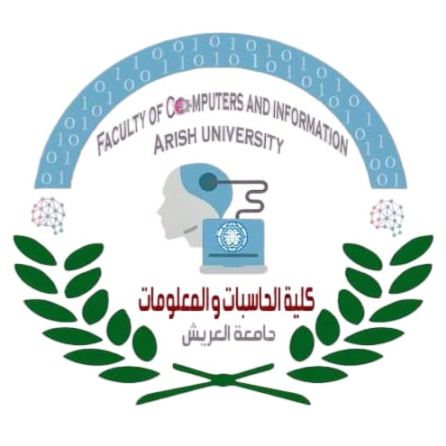

Goal: cut tokens and API cost for AI coding agents, report the energy and CO₂ that follows, and prove what compression does to answer quality.

A Task-Aware, Token-Efficient Context Tool for AI Coding Agents
About nine seconds of TV. Tiny, until you remember a coding agent makes many calls per task, and very long inputs use more than the median prompt.
Google, Aug 2025 (median Gemini Apps text prompt). OpenAI's CEO cited 0.34 Wh for an average ChatGPT prompt.Goal: cut tokens and API cost for AI coding agents, report the energy and CO₂ that follows, and prove what compression does to answer quality.
On your machine
In the cloud, statistics only
Source code and prompt text never leave your machine.
Without Lens
With Lens
Same agent, same model, same benchmark tasks, four conditions:
A good result: big token savings with answer quality unchanged.
Anthropic. Model Context Protocol specification.
Liu et al. Lost in the middle. TACL, 2024.
Luccioni, Jernite, Strubell. Power hungry processing. FAccT, 2024.
Strubell et al. Energy and policy considerations for deep learning in NLP. ACL, 2019.
Google. Measuring the environmental impact of AI inference. Aug 2025.
GenAI Impact. EcoLogits and EcoLogits Calculator.
Brunsfeld et al. Tree-sitter.
LeanCTX project documentation.
Thank you · Questions?